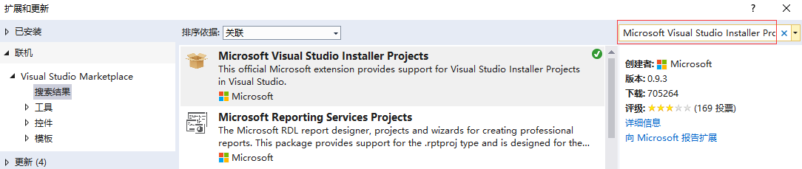

原文连接:https://www.cnblogs.com/kiba/p/11052619.html
前言
打包桌面应用程序实在是一个不常使用的东西，偶尔使用起来经常会忘东忘西的耽误时间，因此，这篇文章多以图片记录过程，也是用于备忘。
下载打包工具
C#打包桌面应用程序有很多种方法，这里介绍一种使用Microsoft Visual Studio Installer Projects工具打包的方法。
首先，我们先创建一个Windows桌面应用，如图：
接下来我们选择工具，点击扩展和更新，如图：
然后我们得到界面如下，如图：
界面默认显示的是已安装的内容，我们仔细看下内容，会发现，这里都是我们已经安装过的工具，在仔细看，我们会发现，这里大部分工具的创建者都是microsoft，也就是说，这里的工具都是官方给我们提供的工具。
因为我们要下载本机不存在的工具，所以我们点击左侧菜单的【联机】按钮，然后在右上角的搜索框中输入Microsoft Visual Studio Installer Projects进行检索，如图：

然后我们选中Microsoft Visual Studio Installer Projects选项，点击选项中右上角的下载，将该工具下载到本地。
下载完成后，我们会发现，在当前窗体的下方有这样一个提示。
该提示，告诉我们，虽然工具已经下载完成了，但还没有进行安装，需要我们关闭Visual Studio后，才能安装。
关闭Visual Studio后，会自动弹出如下提示框，系统还会提示我们是否允许，我们选择【是】。
接下来，该窗体会显示工具的相关内容，下方会增加一个修改按钮，如下图：
我们点击修改，然后工具就会自动安装了。
创建打包项目
等待工具安装完成后，我们重新打开Visual Studio，打开刚刚我们建立的WPF项目。
在WPF项目所在的解决方案中，我们右键新建项目，然后选择左边菜单的【其他项目类型】—【Setup Project】，创建安装工程KibaInstallSetup，如下图：
点击确定 ，我们可以看到如下窗口。

该窗口左边窗口有三个文件夹图片，对应内容如下：
Application Folder：应用程序包含的文件设置。
User's Desktop：用户桌面快捷方式设置。
User's Programs Menu：用户启动菜单的快捷方式设置。
我们先看Application Folder的使用方式，首先选中Application Folder，然后右键—>Add—>项目输出。

点击后，弹出[添加项目输出组页面]，如下图，因为解决方案下只有一个项目，所以我这里项目选择中只有一个选项。

点击确定，我们就成功的把项目主输出添加进来了，如下图：

此时，我们右键我们的安装工程KibaInstallSetup—生成，就已经可以生成该项目的可执行文件了，如下图：
不过，此时的安装文件是最基础的安装文件，什么自定义都没有。
下面我们为安装文件增加桌面快捷方式图标和开始菜单的快捷方式，并且修改可执行文件的作者、描述等等信息。
PS：Application Folder只能右键添加文件，无法添加文件夹，但可以使用Ctrl+C Ctrl+V来添加文件夹。
打包项目属性配置
项目属性
我们先进行安装文件的基础信息更改。
首先，我们左键选中项目，然后选择属性，注意，不是右键选择属性，而是如下图一样选择属性。
点击后，修改一下作者和描述，属性界面如下图所示：
【注意：如果是打包x64的应用程序，需要将上图中的TargetPlatform设置为x64。】
桌面快捷方式
现在我们修改安装程序的快捷方式图片。
左键选中User's Desktop，然后将鼠标移动到右侧窗体，右键选择[创建新的快捷方式]，如下图。
然后，系统弹出一个让我们选择.ico文件的界面，但界面中只有三个文件夹，对应的是我们安装工程左上角的三个文件夹，如下图：
现在我们双击第一个应用程序目录选项，然后点击Add File，向安装目录下添加一个logo.ico文件，最后点击OK。
这样我们就成功创建了桌面快捷方式了，如下图。
现在，我们右键这个Shortcut to logo.ico，修改其名字为Kiba，然后左键点击选中，查看其属性，如下图。
可以看到，我们的快捷方式已经成功指向了我们的主输出，并且Icon也已经修改了。如果不满意指向和Icon，可以在属性里二次修改。
用户菜单快捷方式
用户菜单的快捷方式就是在User's Programs Menu里设置，其设置的方法和桌面快捷方式的设置方法是一模一样的。
依赖文件和依赖框架
依赖文件
我们在打包应用程序时，有时候会需要一些依赖文件，这些文件并不能被主程序引用，但还需要和主程序在同一个安装路径下，那么在打包时，也就需要额外的把这些文件也打包进来。
添加额外依赖文件的方法很简单，选择Application Folder，在其对应的右侧窗体中，右键—Add—文件，如下图：
然后，在弹出的选择文件对话框中选择文件即可。
依赖框架
有时候我们的应用程序需要安装到一个没有Framework的电脑上，那么就需要打包的时候，把Framework也打包进来，或者在用户安装时提示对方下载。
我们右键项目，选择属性，然后在弹出的属性页中点击Prerequisites，如下图：
然后，在系统必备的窗体中，勾选Framework 4.6.1，在选择【从组件供应商的网站上下载系统必备组件】。
这样，我们的可执行文件在运行时，就会提示客户去微软官网下载Framework 4.6.1了，如下图：
当然，我们也可以把Framework 4.6.1打包进来，但这需要我们提前把Framework 的安装包下载下来，然后选择【从下列位置下载系统必备组件】，这样那个置灰的【浏览】按钮就可以使用了。
----------------------------------------------------------------------------------------------------
到此，使用InstallerProjects打包桌面应用程序讲解就结束了。
代码已经传到Github上了，欢迎大家下载。
Github地址：https://github.com/kiba518/KibaInstall
----------------------------------------------------------------------------------------------------
注：此文章为原创，任何形式的转载都请联系作者获得授权并注明出处！
若您觉得这篇文章还不错，请点击下方的【推荐】，非常感谢！